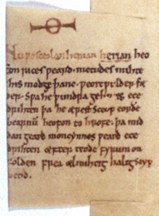

f. 82v, outer margin

1Nu[2] ƿesceolan herıan herıan[3] heo|
〈f〉on rıces[4] ƿeard·2metudes mıhte|
[⁊][5]hıs modgeþanc·3ƿeorcƿulder fæ|
〈d〉er·[6] Sƿa he ƿundra ge〈hƿæ〉s[7] 4ece|
drıhten 5þa he ærest sceop eorðe|
bearnū 6heofon to hrofe· 7þa mıd|
dan geard moncynnes ƿeard 8ece|
drıhten æfter teode 9fyrum on|
folden[7] frea ælmıhtıg 10halıg |scyp|
〈p〉eod·[8]|
[1]The [semi-]diplomatic transcription of Ld in Dobbie 1937 (41) is inconsistent in its representation of manuscript word spacing and division. The invariably insignificant differences have not been noted.
[2]Nu ...|scyp|〈p〉eod·|] Some damage to letters in left-hand margin due to trimming.
[3]herıan herıan] herian is repeated with second occurrence deleted by underlining. A similar correction has been made in W (herıa〈n〉|herı).
[4]heo|〈f〉on rıces] Right horizontal strokes of (expected) <f> visible.
[5][⁊]] Fragment of (presumed) nota is visible in margin.
[6]ƿulder fæ|〈d〉er·] The right hand of the loop of the second <d> is visible in margin.
[7]ge〈hƿæ〉s] Rubbing has damaged the bottom parts of the <h>, <ƿ>, and first loop of the <æ>.
[7]folden] The descender of initial <f> has been partially trimmed.
[8]|scyp|〈p〉eod·|] scyp is smaller and slightly above the line established by the other words. It is, however, in the same hand and the same colour ink. The descender of the second <p> has been trimmed.
(Image © Bodleian Library, Oxford. Reproduced with permission)
{kind=link}